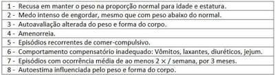

Adolescente, sexo feminino, 15 anos, refere perda de 15 kg nos últimos seis meses e amenorréia. Apresenta vômitos, diarréia, dor abdominal e mal estar. Nega febre. Exame físico: palidez, caquexia, frequência cardíaca de 40 batimentos por minuto. Exames laboratoriais: potássio sérico de 3,0 mEq/L (VR: 3,5 - 5,1mEq/L), hematócrito de 30% (VR: 36 - 43%), velocidade de hemossedimentação de 3 mm/hora (VR: até 10 mm/hora) e colesterol total de 300 mg/dL. A hipótese diagnóstica mais provável?
Paciente de 18 anos, gênero feminino, é admitida em unidade de emergência por quadro de discurso inapropriado e agitação psicomotora iniciados há 3 horas. Ao exame físico encontra-se hipocorada ++/4, desidratada +/+, FC=100bpm (ritmo sinusal), altura=160cm, peso=35kg (IMC=13,6), desorientada no tempo e espaço, com marcha atáxica e nistagmo horizontal. Realiza acompanhamento ambulatorial com psiquiatra por depressão grave inclusive com comportamento anorético em uso irregular de sertralina. Diante deste caso, como devemos tratar a paciente?
Adolescente de 15 anos, sexo feminino, comparece ao ambulatório de pediatria, pois deseja um “atestado para frequentar academia”. Paciente relata que realiza exercícios físicos há dez meses, correndo cerca de 20km por dia, além de dieta restritiva para emagrecer baseada em sopas e água. No momento, pesa 39kg e tem 160cm de altura, com IMC de 15,2kg/m² (abaixo do z escore -3), porém sente-se “inchada” e refere incômodo com suas dobras cutâneas, em quadril e região abdominal. Nesse tipo de distúrbio alimentar apresentado pela paciente, é correto afirmar que:
Os pais de uma adolescente relatam ao seu pediatra, na ausência da paciente, que estão percebendo que ela tem mudado o comportamento alimentar. Viram, por diversas vezes, que estava comendo escondida, muito rapidamente e em grandes quantidades. Referem que ela tem vergonha quando é vista nessa situação, que demonstra tristeza após alimentarse e que, muito frequentemente, come até se sentir desconfortável. Das seguintes condições, qual é a mais provável, baseando-se apenas no relato dos pais?
Adolescente de 16 anos de idade, em amenorreia há seis meses, apresenta histórico de distúrbio de autoimagem, compulsão alimentar episódica seguida de vômitos autoinduzidos, que ocorre em média três a quatro vezes por semana. Apresenta IMC de 19 kg/m², FSH = 5,0 UI/L, LH = 8,0 UI/L, Prolactina e TSH normais e elevação discreta dos níveis de cortisol. Além da abordagem multidisciplinar, o tratamento medicamentoso dessa paciente deverá incluir:
Paciente do sexo feminino, de 23 anos, foi encaminhada para serviço ambulatorial especializado após ter sido estabilizada em atendimento de urgência em internação ocasionada por fraqueza generalizada e lipotimia. Durante a avaliação clínica na urgência, foi constatado que a paciente apresentava hipertro a de glândulas parótidas, dentes em regular estado de conservação e sinal de Russel nas mãos. Na consulta ambulatorial, foi verificado que a paciente atendia aos critérios do diagnóstico de bulimia nervosa, por apresentar episódios recorrentes de compulsão alimentar, seguidos de comportamentos compensatórios e inapropriados para evitar o ganho de peso (no caso, autoindução de vômitos). Como proposta terapêutica não farmacológica, foi planejada a terapia cognitiva comportamental, em 20 sessões em grupo, durante 5 meses. Em relação à proposta de terapêutica farmacológica para essa paciente, é correto afirmar que,
Adolescente do sexo feminino, de 12 anos, procura ambulatório com queixas de perda de peso, apesar de grande apetite há três meses. Relata também intensa labilidade emocional (irritável e chorando sem motivo) e mau rendimento escolar, pois não consegue prestar atenção nas aulas. A anamnese familiar revela que o pai tem antecedentes pessoais psiquiátricos. Exame físico: discreta protusão dos globos oculares, sudorese excessiva e taquicardia. O diagnóstico mais provável é:
Mulher de 30 anos encaminhada ao ambulatório de ginecologia pelo psiquiatra onde se trata de anorexia nervosa. Revela não apresentar menstruação há oito meses. Não usa medicações, nega passado cirúrgico e demais queixas. Informa ser sedentária e não usar métodos contraceptivos. G2P2 (cesarianas eletivas sem complicações). Já traz consigo o beta-HCG negativo. Considerando o exposto acima, assinale a alternativa CORRETA quanto à fisiopatologia da amenorreia.
Sobre o tratamento da depressão na atenção primária, assinale a alternativa CORRETA.
Mulher, 33 anos de idade, foi submetida a gastroplastia em Procura o serviço de urgência com queixa de disfagia, regurgitação de alimentos sólidos, há 1 mês, com piora progressiva. Ao exame físico: bom estado geral, desidratada, corada, abdome flácido e indolor à palpação. Qual é a principal hipótese diagnóstica?
Paciente de 26 anos, do sexo feminino, com história de transtorno bipolar e anorexia nervosa. Atualmente em descompensação. Foi encontrada em casa, sonolenta e desorientada. Paciente em uso de lítio e quetiapina. Na entrada, estava com PA de 90/60 mmHg, FC: 82 bpm, satO2 de 98% em ar ambiente, glicemia capilar de 75. Na sala de emergência, coletou-se sangue periférico e administrou-se soro glicosado. Pouco tempo depois, a paciente teve piora da sonolência e já não conseguia se manter em pé. Ao exame neurológico, tinha nistagmo e redução da amplitude do olhar. A causa mais provável para o quadro é:
Adolescente de 15 anos é levada ao pediatra porque seus pais notaram que ela vem fazendo “regimes da moda” há alguns meses, mas mesmo assim, como não mantém a dieta por muitos dias segue um pouco acima do peso. A família também percebeu em diversas vezes que a paciente se envolve em episódios em que come “como se não houvesse amanhã”, especialmente durante a noite. Nessas ocasiões, sua mãe percebe que a menor se tranca no banheiro por várias horas e escuta várias vezes a descarga ser acionada. O diagnóstico mais provável é:
Em relação aos Transtornos Mentais na Infância e na Adolescência, analisar os itens abaixo: I. Testes de inteligência ou medidas neuropsicológicas, bem como exames complementares, como eletroencefalograma ou neuroimagem, precisam ser realizados rotineiramente na avaliação diagnóstica do Transtorno de Dé cit de Atenção e Hiperatividade. II. Devido à associação dos antidepressivos inibidores seletivos de recaptação de serotonina com eventos adversos anticolinérgicos, somados às alterações eletrocardiográ cas e dos relatos de morte súbita, faz com que os mesmos não sejam utilizados no tratamento dos quadros depressivos na população infantil. III. A bulimia nervosa possui como características essenciais as compulsões periódicas e os métodos compensatórios inadequados para evitar o ganho de peso. IV. O Transtorno de Espectro Autista é mais frequente em meninos. Está(ão) CORRETO(S):
Revisar: possível letra faltando em enunciado
Paciente feminina, 24 anos, universitária, vem em consulta médica com relato de desmaio durante a segunda aula seguida de cross t no dia anterior. O namorado relata que, mesmo com o peso dentro da normalidade, a paciente mostra-se insatisfeita e preocupada com seu peso corporal. Refere, também, que era comum crises de choro e ansiedade seguidas de consumo exagerado de comida. Explicita, ainda, que, no dia do ocorrido na academia, eles tiveram uma séria discussão e a paciente consumiu, sozinha, uma lasanha tamanho família e um litro de refrigerante. Em se tratando do caso ora referido, a paciente se enquadra, clinicamente, no diagnóstico de:
Adolescente de 15 anos de idade é levada pela mãe para o pronto-socorro de um hospital geral, por ter ingerido grande quantidade de medicamentos. Feita a estabilização clínica e com a melhora da consciência, a adolescente conta que fez uso dos medicamentos após uma discussão com a mãe. Refere que se acha gorda e “odeia” o seu corpo e que há dois anos vem tentando emagrecer. No entanto, diz que depois de um dia restringindo de forma rigorosa a alimentação, acaba perdendo o controle e comendo “tudo o que vê pela frente”. Além disso, relata que tem feito uso de laxativos e diuréticos, com o objetivo de “desinchar” e compensar os episódios com- pulsivos. Apresenta peso atual de 71 kg e altura de 1,64 m. A adolescente nega ideação suicida e relata que já buscou atendimento psicológico, mas que frequentou de forma irregular e abandonou há um ano. Sobre a bulimia nervosa pode-se afirmar que:
Adolescente, 15 anos de idade, estudante, é levada pela mãe para uma avaliação com um médico clínico. Na consulta, a paciente se apresenta bastante emagrecida (peso 38 kg, altura 1,61 m) contrariada, relatando não apresentar qualquer tipo de queixa. A mãe relata que, há aproximadamente oito meses, a lha, que então apresentava cerca de 53 Kg, iniciou uma dieta bastante rigorosa após o término de um namoro e por acreditar que o motivo da separação foi ela estar acima do peso. Além disso, conta que sempre foi muito perfeccionista, preocupada com a sua aparência e seu rendimento escolar. Logo após o início da dieta, começou a frequentar a academia diariamente, inclusive nos nas de semana. Rapidamente, intensi cou a restrição alimentar e atividade física, chegando a ir mais de duas vezes por dia à academia, evoluindo com rápida e evidente perda de peso. A mãe relata, que apesar disso, a lha ainda mantém queixa de estar gorda e de que a meta agora é chegar aos 35 quilos. Nega tratamento psiquiátrico ou psicológico prévio. Segundo a mãe, a adolescente tem cado muito tempo na internet pesquisando sobre formas de emagrecimento, dietas, exercícios físicos e até medicamentos. Sobre a anorexia nervosa (AN) pode-se afirmar que:
Revisar: possível letra faltando em enunciado
Paciente feminina, 24 anos, universitária, vem em consulta médica com relato de desmaio durante a segunda aula seguida de cross t no dia anterior. O namorado relata que, mesmo com o peso dentro da normalidade, a paciente mostra-se insatisfeita e preocupada com seu peso corporal. Refere, também, que era comum crises de choro e ansiedade seguidas de consumo exagerado de comida. Explicita, ainda, que, no dia do ocorrido na academia, eles tiveram uma séria discussão e a paciente consumiu, sozinha, uma lasanha tamanho família e um litro de refrigerante. Em se tratando do caso ora referido, a paciente se enquadra, clinicamente, no diagnóstico de:
Menina, 11 meses, é trazida a unidade Básica de Saúde com história de picacismo há um mês. Alimentação: leite Materno, leite de vaca, baixa ingesta de alimentação sólida (carne e frutas raramente). Nega antecedente de anemia na família. Exame físico: mucosas descoradas ++/4+ e palidez cutânea. Hb=8,5g/dL; Htc=29%; Rtc=1,7%; VCM=62 ; HCM=22pg; RDW=19%; Ferritina=8ng/mg. A CONDUTA É PRESCREVER:
Uma paciente de 19 anos de idade refere ser bastante preocupada com o peso, mas tem muita di culdade em controlar sua vontade de comer. Faz dieta por conta própria para emagrecer, com grandes períodos de jejum. Mas também há vários momentos em que se desespera e consome grandes quantidades de alimento, mesmo que não lhe agrade ao paladar; depois vai ao banheiro para vomitar, sentindo-se muito culpada por ter comido compulsivamente e provocado o vômito. Nos últimos tempos, esse comportamento tem aumentado. Também utiliza, sem orientação médica, medicações do tipo laxantes e diuréticos. Sua preocupação com o peso tem piorado, e ela está um pouco acima do peso considerado adequado para sua idade e altura. Em relação a esse caso clínico e com base nos conhecimentos médicos correlatos, julgue os itens a seguir. Como um dos fatores psicológicos relacionados com o transtorno exempli cado no caso clínico, pode-se a rmar que tais pacientes experenciam os episódios de comer compulsivamente como egodistônico.
Revisar: possível letra faltando em enunciado
Uma paciente de 19 anos de idade refere ser bastante preocupada com o peso, mas tem muita di culdade em controlar sua vontade de comer. Faz dieta por conta própria para emagrecer, com grandes períodos de jejum. Mas também há vários momentos em que se desespera e consome grandes quantidades de alimento, mesmo que não lhe agrade ao paladar; depois vai ao banheiro para vomitar, sentindo-se muito culpada por ter comido compulsivamente e provocado o vômito. Nos últimos tempos, esse comportamento tem aumentado. Também utiliza, sem orientação médica, medicações do tipo laxantes e diuréticos. Sua preocupação com o peso tem piorado, e ela está um pouco acima do peso considerado adequado para sua idade e altura. Em relação a esse caso clínico e com base nos conhecimentos médicos correlatos, julgue os itens a seguir. Para o diagnóstico da paciente citada, existem dois subtipos: o purgativo e o não purgativo.
Uma paciente de 19 anos de idade refere ser bastante preocupada com o peso, mas tem muita di culdade em controlar sua vontade de comer. Faz dieta por conta própria para emagrecer, com grandes períodos de jejum. Mas também há vários momentos em que se desespera e consome grandes quantidades de alimento, mesmo que não lhe agrade ao paladar; depois vai ao banheiro para vomitar, sentindo-se muito culpada por ter comido compulsivamente e provocado o vômito. Nos últimos tempos, esse comportamento tem aumentado. Também utiliza, sem orientação médica, medicações do tipo laxantes e diuréticos. Sua preocupação com o peso tem piorado, e ela está um pouco acima do peso considerado adequado para sua idade e altura. Em relação a esse caso clínico e com base nos conhecimentos médicos correlatos, julgue os itens a seguir. Os exames laboratoriais para o transtorno que a paciente mencionada possui devem incluir as dosagens de eletrólitos. Pacientes com rituais purgativos frequentes devem apresentar hipermagnesemia e hipoamilasemia.
Uma paciente de 19 anos de idade refere ser bastante preocupada com o peso, mas tem muita di culdade em controlar sua vontade de comer. Faz dieta por conta própria para emagrecer, com grandes períodos de jejum. Mas também há vários momentos em que se desespera e consome grandes quantidades de alimento, mesmo que não lhe agrade ao paladar; depois vai ao banheiro para vomitar, sentindo-se muito culpada por ter comido compulsivamente e provocado o vômito. Nos últimos tempos, esse comportamento tem aumentado. Também utiliza, sem orientação médica, medicações do tipo laxantes e diuréticos. Sua preocupação com o peso tem piorado, e ela está um pouco acima do peso considerado adequado para sua idade e altura. Em relação a esse caso clínico e com base nos conhecimentos médicos correlatos, julgue os itens a seguir. No diagnóstico diferencial do transtorno em questão, é importante considerar a ausência de doença neurológica, como epilepsia, tumores do sistema nervoso central, síndrome de Klüver-Bucy ou síndrome de Kleine-Levin.
Uma paciente de 19 anos de idade refere ser bastante preocupada com o peso, mas tem muita di culdade em controlar sua vontade de comer. Faz dieta por conta própria para emagrecer, com grandes períodos de jejum. Mas também há vários momentos em que se desespera e consome grandes quantidades de alimento, mesmo que não lhe agrade ao paladar; depois vai ao banheiro para vomitar, sentindo-se muito culpada por ter comido compulsivamente e provocado o vômito. Nos últimos tempos, esse comportamento tem aumentado. Também utiliza, sem orientação médica, medicações do tipo laxantes e diuréticos. Sua preocupação com o peso tem piorado, e ela está um pouco acima do peso considerado adequado para sua idade e altura. Em relação a esse caso clínico e com base nos conhecimentos médicos correlatos, julgue os itens a seguir. O tratamento farmacológico do transtorno apresentado deve evitar a utilização dos inibidores da recaptação da serotonina, pois eles aumentam o apetite e a compulsão alimentar na maioria dos pacientes.
Uma paciente de 19 anos de idade refere ser bastante preocupada com o peso, mas tem muita di culdade em controlar sua vontade de comer. Faz dieta por conta própria para emagrecer, com grandes períodos de jejum. Mas também há vários momentos em que se desespera e consome grandes quantidades de alimento, mesmo que não lhe agrade ao paladar; depois vai ao banheiro para vomitar, sentindo-se muito culpada por ter comido compulsivamente e provocado o vômito. Nos últimos tempos, esse comportamento tem aumentado. Também utiliza, sem orientação médica, medicações do tipo laxantes e diuréticos. Sua preocupação com o peso tem piorado, e ela está um pouco acima do peso considerado adequado para sua idade e altura. Em relação a esse caso clínico e com base nos conhecimentos médicos correlatos, julgue os itens a seguir. A indicação de tratamento hospitalar é o plano terapêutico preferencial para o tipo de transtorno demonstrado pela paciente, em razão do comprometimento da sobrevida, situação frequente nesse tipo de diagnóstico.
Uma paciente de 19 anos de idade refere ser bastante preocupada com o peso, mas tem muita di culdade em controlar sua vontade de comer. Faz dieta por conta própria para emagrecer, com grandes períodos de jejum. Mas também há vários momentos em que se desespera e consome grandes quantidades de alimento, mesmo que não lhe agrade ao paladar; depois vai ao banheiro para vomitar, sentindo-se muito culpada por ter comido compulsivamente e provocado o vômito. Nos últimos tempos, esse comportamento tem aumentado. Também utiliza, sem orientação médica, medicações do tipo laxantes e diuréticos. Sua preocupação com o peso tem piorado, e ela está um pouco acima do peso considerado adequado para sua idade e altura. Em relação a esse caso clínico e com base nos conhecimentos médicos correlatos, julgue os itens a seguir. O transtorno apresentado pela paciente do caso descrito geralmente se inicia no nal da adolescência ou no início da vida adulta.
Uma paciente do sexo feminino tem 26 anos de idade e estuda da aula, sendo levada a um serviço de urgência clínica. Diz que cuida bem da sua saúde e que não sabe porque desmaiou. Informa que é frequentadora assídua na academia e que tem rígido controle alimentar, fazendo dieta desde os 14 anos de idade. Sempre foi organizada com suas coisas e, em especial, com sua alimentação e saúde. Frequentemente se preocupa com o que vai comer e deixa tudo separado, de forma a manter seu corpo no desenho estético de que gosta. Faz exercícios físicos com muita atenção e sob orientação, preferencialmente os que exigem muito gasto calórico. Está sem menstruar há cerca de quatro meses, mas alega que isso já aconteceu outras vezes. Ao exame, apresentava IMC de 19 kg/m quadrado. Qual é o melhor diagnóstico para essa situação?
Analise as afirmativas a seguir relativas à anorexia nervosa. I. A anorexia nervosa caracteriza-se por um padrão de redução extrema da alimentação ingerida, de forma consciente e deliberada, em busca de um ideal de corpo esquio e medo exagerado e engordar, levando a vários graus de emagrecimento. II. A anorexia é dividida em dois subtipos clínicos de acordo com a presença ou a ausência de compulsão alimentar e comportamentos purgativos tipo purgativo / compulsão periódica e tipo restritivo. III. A presença de amenorreia e o ponto de corte da perda de peso são itens ainda questionáveis para o diagnóstico. Estão corretas as afirmativas
São critérios necessários para o diagnóstico de PICA (alimentação de substâncias não nutritivas e não alimentares): I. Ocorrer a alimentação de substâncias não nutritivas e não alimentares persistente durante um período de, pelo menos, um mês. II. Presença de comportamento alimentar inadequado para o nível de desenvolvimento, sendo sugerida uma idade mínima de 2 anos. III. Associação com deficiência dos micronutrientes ferro e zinco. Quais estão corretas?
São critérios necessários para o diagnóstico de PICA (alimentação de substâncias não nutritivas e não alimentares): I. Ocorrer a alimentação de substâncias não nutritivas e não alimentares persistente durante um período de, pelo menos, um mês. II. Presença de comportamento alimentar inadequado para o nível de desenvolvimento, sendo sugerida uma idade mínima de 2 anos. III. Associação com deficiência dos micronutrientes ferro e zinco. Quais estão corretas?
São critérios necessários para o diagnóstico de PICA (alimentação de substâncias não nutritivas e não alimentares): I. Ocorrer a alimentação de substâncias não nutritivas e não alimentares persistente durante um período de, pelo menos, um mês. II. Presença de comportamento alimentar inadequado para o nível de desenvolvimento, sendo sugerida uma idade mínima de 2 anos. III. Associação com deficiência dos micronutrientes ferro e zinco. Quais estão corretas?
São critérios necessários para o diagnóstico de PICA (alimentação de substâncias não nutritivas e não alimentares): I. Ocorrer a alimentação de substâncias não nutritivas e não alimentares persistente durante um período de, pelo menos, um mês. II. Presença de comportamento alimentar inadequado para o nível de desenvolvimento, sendo sugerida uma idade mínima de 2 anos. III. Associação com deficiência dos micronutrientes ferro e zinco. Quais estão corretas?
São critérios necessários para o diagnóstico de PICA (alimentação de substâncias não nutritivas e não alimentares): I. Ocorrer a alimentação de substâncias não nutritivas e não alimentares persistente durante um período de, pelo menos, um mês. II. Presença de comportamento alimentar inadequado para o nível de desenvolvimento, sendo sugerida uma idade mínima de 2 anos. III. Associação com deficiência dos micronutrientes ferro e zinco. Quais estão corretas?
Assinale a opção que não está relacionada com Anorexia Nervosa nos Transtornos Alimentares:
Em relação aos transtornos alimentares, no que se refere à anorexia nervosa, considere as seguintes a rmações conforme o DSM-5: I- Restrição da ingesta calórica em relação às necessidades, levando a um peso corporal significativamente baixo no contexto de idade, gênero, trajetória do desenvolvimento e saúde física. Peso significativamente baixo é definido como um peso inferior ao peso mínimo normal ou, no caso de crianças e adolescentes, menor do que o minimamente esperado. II- Medo intenso de ganhar peso ou de engordar, ou comportamento persistente que interfere no ganho de peso, mesmo estando com peso significativamente baixo. III- Perturbação no modo como o próprio peso ou a forma corporal são vivenciados, ausência persistente de reconhecimento da gravidade do baixo peso corporal atual. IV- Não há medo intenso de ganhar peso e o adolescente sente-se bem, não considerando seu índice de massa corporal. Pode-se afirmar:
Em relação aos transtornos alimentares, no que se refere à Pica, considere as seguintes afirmações conforme o DSM-5: I- Há ingestão persistente de substâncias não nutritivas, não alimentares, durante um período mínimo de um mês. II- A ingestão de substâncias não nutritivas, não alimentares, é inapropriada ao estágio de desenvolvimento do indivíduo. III- O comportamento alimentar não faz parte de uma prática culturalmente aceita. IV- Se o comportamento alimentar ocorrer no contexto de outro transtorno mental (p. ex., de ciência intelectual [transtorno do desenvolvimento intelectual], transtorno do espectro autista, esquizofrenia) ou condição médica (incluindo gestação), é suficientemente grave a ponto de necessitar de atenção clínica adicional. Pode-se afirmar que:
Em relação à avaliação da Criança e Adolescente com Transtorno Psiquiátrico na Emergência, no que se refere à anorexia podemos observar que:
Os transtornos alimentares se caracterizam por falta de satisfação com o corpo relacionada com supervalorização de um corpo magro ideal. As formas mais graves destes transtornos envolvem a anorexia nervosa e a bulimia. Qual das alterações abaixo seria mais provável de ser encontrada na anorexia nervosa?
São critérios necessários para o diagnóstico de PICA (alimentação de substâncias não nutritivas e não alimentares): I. Ocorrer a alimentação de substâncias não nutritivas e não alimentares persistente durante um período de, pelo menos, um mês. II. Presença de comportamento alimentar inadequado para o nível de desenvolvimento, sendo sugerida uma idade mínima de 2 anos. III. Associação com deficiência dos micronutrientes ferro e zinco. Quais estão corretos?
Com referência a transtornos alimentares na adolescência,
Paciente do sexo feminino, 20 anos, é trazida para consulta ambulatorial por sua mãe com queixa de amenorreia há cinco meses. A paciente faz dieta para emagrecer desde os 16 anos, pesa rigorosamente o volume de comida em seu prato a cada refeição e frequenta academia de ginástica diariamente por pelo menos 2 horas durante os últimos três anos. Seu índice de massa corporal é de 18kg/m². Assinale a alternativa CORRETA, que apresenta a hipótese diagnóstica mais provável.
Mulher, 24 anos, com anorexia nervosa há 10 anos, internou para investigação de episódio de síncope. Seu IMC é de 12 Kg/m 2 (estatura=1,62 m; peso=31,5 Kg); a ingestão alimentar é de 250 Kcal/dia. A nutrição enteral foi iniciada no primeiro dia de internação, com oferta energética de 1200 Kcal/dia e 48 gramas de proteínas. No terceiro dia de internação, apresentou dispneia, congestão pulmonar, edema discreto de membros inferiores, PA: 70/30 mmHg, confusão mental, hipofosfatemia, hipomagnesemia e hipocalcemia. Qual a conduta imediata mais adequada?
A elevação em qual dos hormônios abaixo é decorrente dos efeitos da anorexia nervosa?
Qual aternativa associa corretamente o antidepressivo com sua(s) principal(is) contra- indicação(ões)?
Uma adolescente de 14 anos é levada ao Pronto Atendimento com queixa de perda de peso (13 quilos em 6 meses) e amenorreia. Ela nega vômitos, diarreia, dor abdominal ou outras queixas. Insiste que se sente muito bem. O exame físico mostra caquexia e frequência de pulso = 48 batimentos por minuto. Os exames solicitados mostram glicose sérica = 62 mg/dl, potássio sérico = 3,2 mEq/l e hematócrito = 30%. Qual alternativa abaixo indica o diagnóstico mais provável para essa adolescente?
Em relação a alimentação persistente de substâncias não nutritivas ou de substâncias não pertencentes ao cardápio em geral (pica), assinale V para assertiva Verdadeira e F para assertiva Falsa. ( ) Esse distúrbio alimentar ocorre mais frequentemente em pacientes com esquizofrenia do que em pacientes apresentando transtorno do espectro autista. ( ) Para diagnóstico desse distúrbio alimentar sugere-se que a criança tenha idade mínima de 2 anos. ( ) Essas crianças são de risco para obstrução intestinal e intoxicação por chumbo. ( ) Abuso infantil deve ser incluído entre os diagnósticos diferenciais em quadros como esse. ( ) Esse distúrbio alimentar ocorre sistematicamente em pacientes com anemia perniciosa. Assinale a sequência correta:
A qual dos distúrbios do comportamento alimentar os sinais e sintomas a seguir se referem: distúrbios hidroeletrolíticos, alcalose ou acidose metabólicas, perda do esmalte dentário, aumento das glândulas salivares, esofagite, sintomas depressivos e ansiedade.
A prática de atividade física na adolescência promove uma melhora da autoestima, diminui comportamentos de risco, aumenta a densidade mineral óssea e diminui o risco de obesidade. Entretanto, meninas atletas devem ser acompanhadas em relação ao risco de desenvolverem a tríade da mulher atleta. Não faz parte desta tríade:
Uma adolescente de 15 anos manifesta intensa preocupação com relação ao peso, e os familiares informam que ela faz uso de anorexígenos. Apresenta episódios recorrentes de descontrole alimentar e adota condutas purgativas — vômitos autoprovocados, uso de diurético e laxante, alternados com dieta intensamente restritiva. Pouco colaborativa ao exame, desa a os familiares e os pro ssionais da unidade básica de saúde. Apresenta IMC de 15,3 e está em amenorreia há 4 meses. Qual o diagnóstico dessa adolescente?
Com relação às questões éticas no tratamento da anorexia nervosa podemos afirmar que:
Qual é o sintoma que, ao ocorrer no início do quadro clínico, contraria o diagnóstico de anorexia nervosa em uma paciente com muito baixo peso?
A.G.M., de 23 anos, do sexo feminino, apresenta grande preocupação em relação ao seu peso corporal. Diz que nos últimos meses não tem conseguido se desligar desses pensamentos e quer muito emagrecer. Apesar de seus familiares e amigos dizerem que ela está com um peso adequado e o corpo muito bonito, ela se acha muito gorda e tenta seguir dietas muito restritivas sem, no entanto, conseguir mantê-las por mais de dois ou três dias. Geralmente, após um breve período de restrição alimentar, acaba tendo episódios nos quais perde o controle sobre a quantidade de alimentos ingeridos, come uma quantidade excessiva, se arrepende em seguida e usa métodos laxativos ou provoca vômitos para tentar não absorver aquelas “calorias”. Nos últimos seis meses, esses episódios têm ocorrido de uma a duas vezes por semana. Ao exame: peso de 67 kg e altura de 160 cm. Qual é o diagnóstico da paciente, levando em consideração os critérios atuais da Associação Psiquiátrica Americana (DSM-5)?
Ao longo de uma avaliação clínica de uma pessoa com transtorno alimentar, o profissional de saúde percebe que o paciente apresentou nos últimos anos uma tendência a estabelecer um limiar de peso definido, acima do qual não deseja estar, e apresenta também pavor mórbido de engordar, adotando medidas purgativas depois de ingerir grande quantidade de alimentos. Tais características são típicas de:
Uma adolescente com 16 anos de idade é trazida à Unidade Básica de Saúde (UBS) pela mãe, apresentando quadro de tristeza e amenorreia há 4 meses. A mãe relata que o comportamento da adolescente tem mudado desde que ela passou a frequentar o grupo de dança da comunidade onde mora, há um ano. Informa que, desde então, a lha vem perdendo peso e tem se alimentado apenas com frutas e verduras, recusando-se a participar dos eventos familiares e se isolando de amigos da escola, embora continue a frequentar com assiduidade o grupo de dança. Ao exame físico, a adolescente mostra-se triste e pouco interativa, está hipocorada, hidratada, eupneica. Apresenta índice de massa corporal = 15 kg/m²; pressão arterial = 90 x 50 mmHg; frequência cardíaca = 55 bpm. Observa-se discreto aumento do volume das parótidas bilateralmente. Exames laboratoriais realizados na UBS mostram anemia normocrômica/normocítica, elevação de aminotransferases, hiponatremia, normocalemia e nível de creatinina normal. Diante do quadro clínico apresentado, o diagnóstico e a conduta mais apropriada a ser tomada pelo médico de família são
Adolescente de 15 anos, sexo masculino, comparece à consulta com sua mãe, preocupado por ser o mais baixo do grupo de amigos. Nega antecedentes patológicos. A menarca materna ocorreu aos 12 anos. O pai iniciou pili cação em face aos 13 anos. Exame físico: score 0 de peso, altura no score -1, velocidade de crescimento: 5 cm/ano. Tanner: G1P1. A hipótese diagnóstica é:
Em relação à anorexia nervosa na adolescência, assinale a alternativa CORRETA:
Diagnóstico da Bulimia Nervosa Numere a segunda coluna de acordo com a primeira, considerando as características dos distúrbios alimentares do adulto. Coluna 1: Distúrbios alimentares: 1- Anorexia nervosa; 2. Transtorno de compulsão alimentar periódica; 3. Comportamento beliscador; 4. Bulimia nervosa.; Coluna 2: Características: ( ) O paciente ingere, em um período curto de tempo, uma quantidade de alimentos maior do que a maioria das pessoas consumiria e adota condutas compensatórias para minimizar o aumento de peso.; ( ) O paciente alimenta-se isoladamente em razão da vergonha da quantidade de alimentos que consome e sente repulsa por si mesmo, depressão ou demasiada culpa após comer excessivamente.; ( ) Sob stress, o paciente comete ingestões repetidas de pequenas quantidades de alimento sem estar com fome ou desejo, sendo que um tipo específico de alimento (geralmente carboidrato) pode causar relativo prazer.; ( ) O paciente recusa-se a manter o peso corporal em um nível igual ou acima do mínimo normal adequado à idade e à altura e tem medo intenso de ganhar peso, com negação do baixo peso atual. O correto preenchimento dos parênteses, de cima para baixo, é:
Você diagnostica anorexia nervosa em uma de suas novas pacientes. Ao coordenar um programa de tratamento com o psiquiatra, que características clínicas devem ser consideradas para um tratamento em regime de internação, em vez de ambulatorial?
O uso de medicamentos para emagrecer é bem descrito em indivíduos maiores de 18 anos, com obesidade ou sobrepeso e comorbidades. Indique a alternativa que apresenta um fármaco utilizado comumente como auxiliar na redução de peso e que devido aos efeitos cardiovasculares, não deve ser usado em cardiopatas.
Os distúrbios alimentares tornaram-se, nos últimos 15 anos, alvo de intensas pesquisas dado o grande aumento de sua incidência na população jovem, principalmente nos adolescentes. Estudos na década de 80, nos EUA, revelaram que a Anorexia Nervosa (AN) é a terceira doença crônica mais comum entre adolescentes do sexo feminino (10 a 20 mulheres para 1 homem), só perdendo para asma e obesidade. Quanto à Bulimia Nervosa (BN), afeta 1 a 5% desta população, sendo também mais frequente na mulher. A AN e a BN são complexas do ponto de vista etiológico, crônicas, de difícil controle, sendo necessário o acompanhamento a longo prazo, e as recaídas são frequentes. A faixa etária mais acometida está entre os 10 e 19 anos. O diagnóstico e tratamento precoce podem fazer toda a diferença entre o fracasso e o sucesso terapêutico (FISBERG, M et al.). Leia atentamente os sinais e sintomas: Dos sinais e sintomas apresentados no quadro acima, qual está presente na Anorexia Nervosa, mas não na Bulimia? (VER IMAGEM)

Nicole, 14 anos de idade, chega ao PS trazida pelo SAMU após desmaio na escola. Você nota que ela está consciente, respira rapidamente, com suspiros frequentes, pulso de 70 bpm, pálida, ausculta cardíaca e respiratória normais, abdome ácido, pele ressecada, com unhas roídas, calos nos dedos e cabelos muito quebradiços. Pesa 30 kg, estatura de 150 cm (Z score -1,41), IMC 13,3 kg/m² (Z score - 3,57). PA 100 x 60 mmHg. A professora da escola informa que ela vem emagrecendo há uns 6 meses, mas que é uma excelente aluna, sempre muito atenciosa e obediente. Ao ser questionada sobre o que aconteceu, Nicole começa a chorar e pedir para ir embora. Diante do caso, qual a sua conduta.
Uma jovem de 18 anos vai ao seu consultório objetivando perder peso. Ao longo do relato, percebe-se hábito alimentares metódicos e monótonos, porém com episódios de compulsão alimentar. Utilizava medicamentos, purgativos e fazia atividade física intensa com o intuito de perder peso mais consistentemente. O aspecto do exame físico que pode favorecer a hipótese diagnóstica de bulimia nervosa é
Transtorno de Personalidade Obsessivacompulsiva Anancástica Dos traços de personalidade abaixo, o que descreve, com maior probabilidade, uma paciente jovem com anorexia nervosa é:
Dos traços de personalidade abaixo, o que descreve, com maior probabilidade, uma paciente jovem com anorexia nervosa é:
Ao se prescrever fluoxetina em monoterapia para uma paciente deprimida com compulsão alimentar periódica, deve-se:
Pré-escolar de três anos, sexo feminino, é levada ao ambulatório pela mãe, que se queixa de que a criança não come nada, só aceita salgadinhos e guloseimas. A criança só come se for forçada, mas algumas vezes vomita em seguida. As verduras, legumes e frutas aceita experimentar, mas não engole, “cospe para fora” (sic). Adora leite com achocolatado, que lhe é oferecido na mamadeira várias vezes ao dia e também durante a noite, já que ela aceita bem. É eutró ca, sem alterações ao exame físico. O diagnóstico provável é:
Revisar: possível letra faltando em enunciado
O uso de antidepressivos é feito em larga escala. A respeito do seu emprego em clínica médica, pode-se a rmar o seguinte:
Paciente do sexo feminino, de 28 anos, apresenta sobrepeso. Queixou-se de desenvolver, há um ano, "compulsão alimentar" e aumento de peso, principal razão da consulta. Nota-se que, nesse período, apresenta humor depressivo (porém com reatividade a estímulos positivos), aumento de apetite, ansiedade patológica, hipersonia, di culdade de concentração, lenti cação psicomotora, preocupação excessiva com o ganho de peso e pensamentos suicidas transitórios. Houve um período curto (menos de uma semana) em que apresentou vários sintomas típicos de hipomania. Nega uso de drogas ou de medicamentos para emagrecer. TSH e T4 livre normais, hemograma normal. A melhor proposta terapêutica é:
São critérios para o diagnóstico da anorexia nervosa, exceto:
Adolescente, sexo feminino, 15 anos, refere perda de 15 kg nos últimos seis meses e amenorréia. Apresenta vômitos, diarréia, dor abdominal e mal estar. Nega febre. Exame físico revela caquexia, frequência cardíaca de 40 batimentos por minuto. Apresenta potássio sérico de 3,0 mEq/L (normal: 3,5 - 5,1 mEq/L), hematócrito de 30% (36 - 43%), velocidade de hemossedimentação de 3 mm/hora (normal: até 10 mm/hora) e colesterol total de 300 mg/dL. Qual a hipótese diagnóstica?
Em relação aos transtornos alimentares, indique a alternativa INCORRETA.
A evacuação completa em sua plena sequência siológica, realizada por uma criança de seis anos em momento e locais não apropriados, é denominada
Mulher, 18 anos, vai ao consultório médico acompanhada por sua mãe. Esta relata ter marcado a consulta por estar preocupada com a crescente sensação de cansaço da lha, que a impede de realizar atividades que antes desempenhava com facilidade, como ir às aulas da faculdade, e também com a ausência de menstruações nos últimos 5 ciclos menstruais. A paciente relata sentir-se cansada e constipada. Exame físico: emagrecida, com índice de massa corporal (IMC) = 16,5 kg/m², hipocorada, com lanugo, frequência cardíaca (FC) = 56 bpm e pressão arterial (PA) = 100 x 50 mmHg. Perguntada sobre sua magreza, a paciente relata ter muito medo de que sua barriga que grande e seja evidenciada pelo contorno de suas roupas. A mãe complementa, dizendo que desde os 15 anos de idade, a paciente tem se submetido a diversas dietas, especialmente no verão. Não há, na história clínica, registro de vômitos provocados ou outras atividades compensatórias. O diagnóstico mais provável para a paciente é:
Assinale a opção correta.
Durante o exame físico de uma paciente com 12 anos, o pediatra detectou "Sinal de Russel". Esse sinal está presente em qual das doenças a seguir?
Adolescente de 15 anos, sexo feminino, é levada ao ambulatório por seus pais, preocupados com sua magreza. Relatam que a lha apresenta medo intenso de ganhar peso, analisa todas as calorias dos alimentos que vai ingerir, está sempre procurando sites de alimentação na internet com objetivo de se manter abaixo de 40 kg. Exame físico: emagrecida; palidez cutâneo-mucosa; P: 39,5 kg (abaixo de pB); altura: 1,58 m (p50); IMC: 15,8; FC: 48 bpm; Tax.: 36°C; PA: 100 x 65 mmHg. Estadiamento de Tanner: M4P4. A hipótese diagnóstica mais provável é:
Em relação à anorexia nervosa, pode-se afirmar que:
Os transtornos alimentares na adolescência, em particular a anorexia nervosa e a bulimia, são cada vez mais diagnosticados. Qual dentre as características abaixo é encontrada, principalmente, nos anoréxicos?
A bulimia nervosa:
Em relação à massa óssea, é correto afirmar que:
Adolescente de 15 anos procura médico com queixa de amenorreia há 4 meses. Refere perda de 20 kg (peso anterior de 60 kg) no último ano, após iniciar regime alimentar. Apesar da perda de peso, acha que ainda precisa perder "mais uns quilinhos" para chegar ao seu peso ideal. A respeito desse caso podemos afirmar que:
No nal do ano de 2011, a diretoria colegiada da Agência Nacional de Vigilância Sanitária (Anvisa) decidiu proibir a venda de parte dos medicamentos inibidores de apetite no país. Referente ao tema, marque a alternativa ERRADA:
Revisar: gabarito não está nas alternativas
Adolescente de 14 anos vem à consulta com história de completa recusa alimentar. Seus pais acham que ela está exagerando no regime que começou há cerca de três meses. Paradoxalmente, há relato de ingestão de grande quantidade de doces e chocolates durante as madrugadas, seguidos de vômitos autoinduzidos. Ao exame físico, apresenta-se emagrecida. Refere amenorreia há dois meses. O diagnóstico mais provável é:
Adolescente de 15 anos procura médico com queixa de amenorreia há 4 meses. Refere perda de 20 kg (peso anterior de 60 kg) no último ano, após iniciar regime alimentar. Apesar da perda de peso, acha que ainda precisa perder ‘’mais uns quilinhos’’ para chegar ao seu peso ideal. A respeito desse caso podemos afirmar que:
(ADAPTADA) Segundo o Diagnostic and Statistical Manual of Mental Disorders (DSM-V), da Associação Americana de Psiquiatria, que critério, dentre os abaixo, não faz parte do diagnóstico de bulimia nervosa?
Do ponto de vista da psicopatologia fenomenológica, a recusa em se alimentar, que normalmente é acompanhada de perda significativa de peso, que ocorre principalmente em pacientes esquizofrênicos, sob a justi cativa de que querem envenená- los, recebe o nome de:
Jovem de 17 anos, sexo feminino, é trazida ao ambulatório de Clínica Médica pelos pais. A queixa é de comportamento 'fora dos padrões' e solicitam investigação adequada. Referem que há cerca de dois anos a mesma apresenta hábitos alimentares aberrantes, chegando a comer '10 pacotes de batatas fritas e incontáveis biscoitos e bombons de chocolate' em um dia. Após este 'dia de farra de comida' (referência dada pelos pais), passa de dois a três dias em intensa atividade física na academia de musculação - com sessões de 6 a 8 horas diárias - sem alimentar-se ou ingerir líquidos adequadamente. Esses ciclos alternantes vêm se repetindo 2 a 3 vezes por semana por pelo menos 6 meses. Durante entrevista, a paciente confirmou as informações dadas pelos pais e referiu que come exagerado por perder o controle, mas que sente-se extremamente infeliz após tais episódios. Relata que se acha um pouco acima do peso, mas nega indução de vômitos ou uso de laxantes em qualquer época. Nega alucinações visuais ou auditivas. A avaliação mostrou plena orientação pessoal, temporal e espacial; o índice de massa corpórea era de 26 kg/m²; as mucosas estavam levemente ressecadas; demais aspectos do exame físico estavam normais. Foi realizada avaliação bioquímica que não demonstrou alterações. Com base nestes dados, qual o diagnóstico mais provável?
A internação de adolescentes com transtornos alimentares (anorexia ou bulimia nervosa) é indicada quando há:
Qual dos seguintes transtornos mentais ocorre mais freqüentemente como comorbidade com a anorexia nervosa?
Adolescente, sexo feminino, com 15 anos de idade, refere perda de 15 kg nos últimos seis meses e amenorreia. Apresenta vômitos, diarreia, dor abdominal e mal estar neste período. O exame físico revela caquexia e frequência cardíaca de 40 batimentos por minuto. Apresenta potássio sérico de 3mEq/L ( 3,5 - 5,1 mEq/L), hematócrito de 30% ( 36% - 43% ) e velocidade de hemossedimentação de 3mm/hora ( até 10mm/hora). O diagnóstico mais provável para essa paciente é:
Uma adolescente de 15 anos, sexo feminino, procura atendimento queixando-se de amenorreia há 4 meses, obstipação crônica. Ao exame, o Índice de Massa Corpórea é igual a 14. O diagnóstico mais provável é:
As complicações clínicas mais comuns entre pacientes com bulimia nervosa incluem:
Uma jovem com 18 anos relata ao seu clínico que apresenta problemas com alimentação. Ela descreve episódios caracterizados por comer em grande quantidade e muito rápido, sem a capacidade de controle e geralmente apresenta esse comportamento na ausência de outras pessoas. Ela não apresenta preocupação exagerada com seu peso e não utiliza nenhum método purgativo. Qual a melhor hipótese diagnóstica?
Sheila Carla de 15 anos é levada à UBS porque seus pais notaram que ela está participando cada vez menos das refeições em família, tem aderido a dietas da moda, mas sempre por curtos períodos, e, apesar disso, segue acima do peso. A família também percebeu diversas vezes em que a paciente se envolve em episódios em que come “como se não houvesse amanhã” , especialmente durante a noite, quando pratica “ataques à geladeira”. Nas manhãs seguintes aos “ataques” , passa horas na academia de seu condomínio. O diagnóstico mais provável é: Respostas: 1 12 23 34 45 56 67 78 89